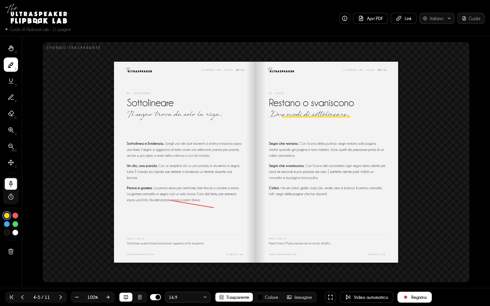
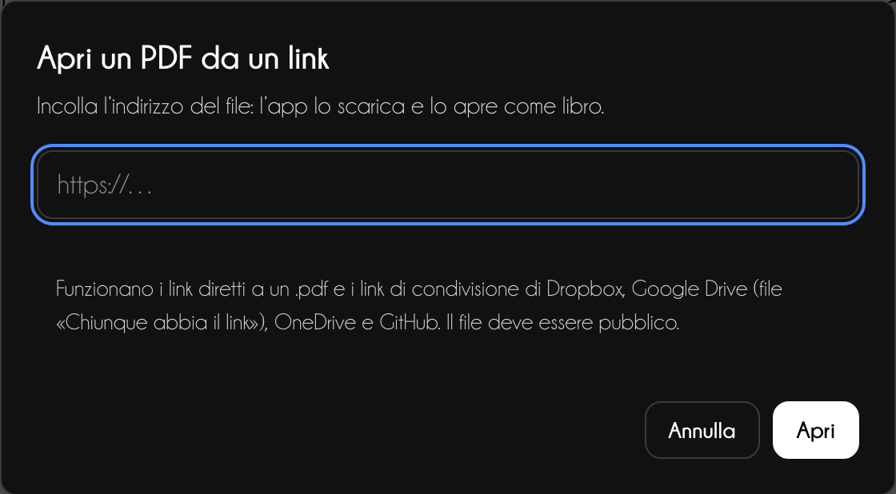
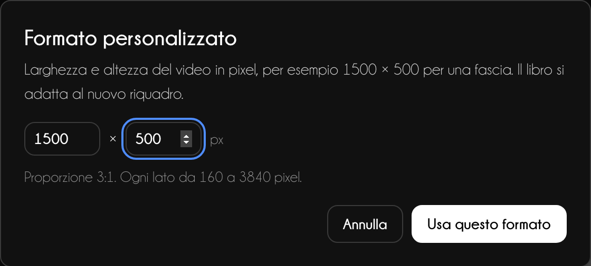
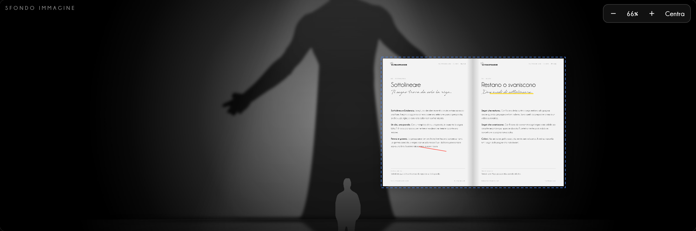
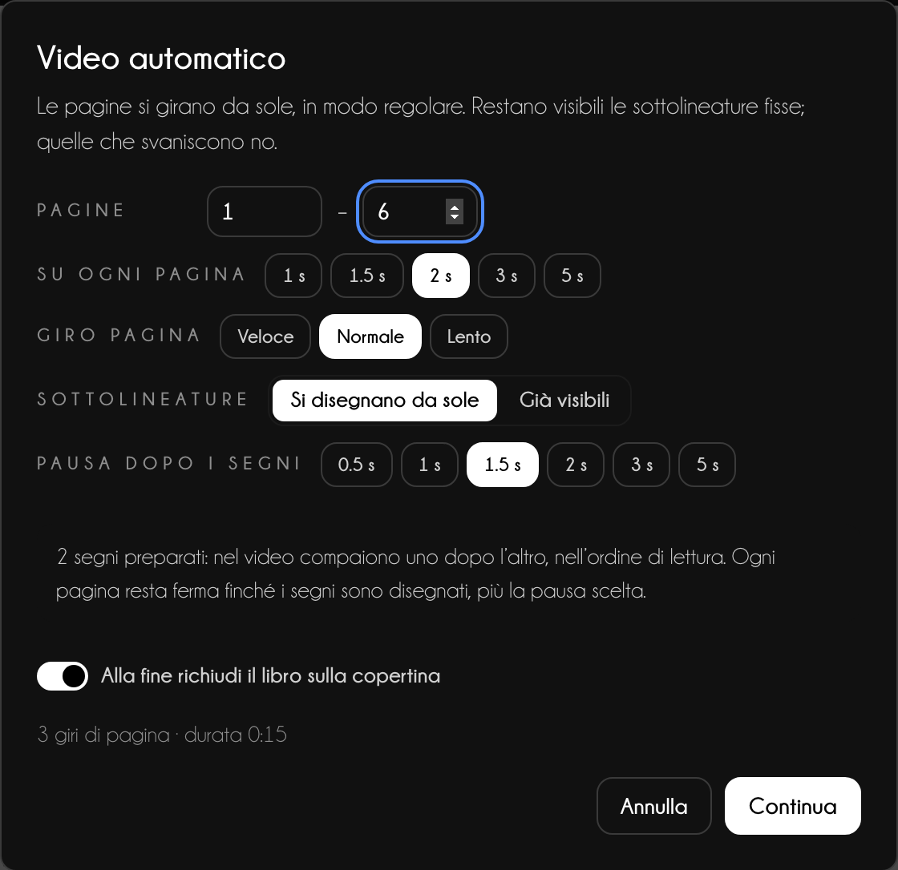
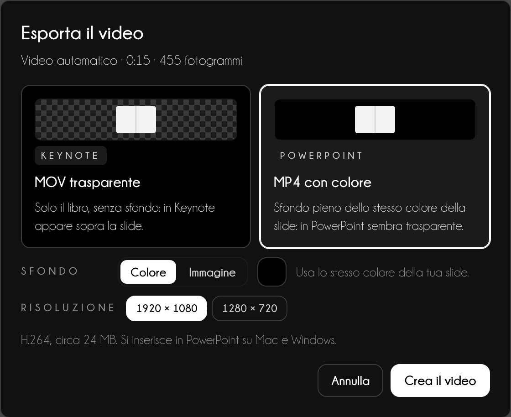
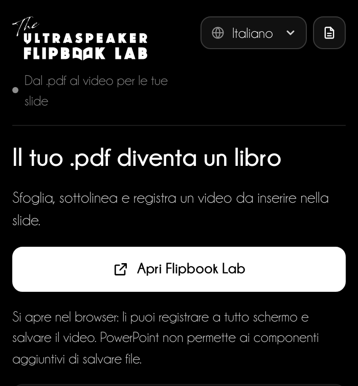

Guida d'utilizzo
Il tuo .pdf diventa
un video per le slide
Sfoglia un documento come un libro, sottolinea le frasi che contano e registra un video: trasparente per Keynote o con lo sfondo della slide per PowerPoint.
Guida d'utilizzo
Sfoglia un documento come un libro, sottolinea le frasi che contano e registra un video: trasparente per Keynote o con lo sfondo della slide per PowerPoint.
Indice
Il Flipbook Lab trasforma un .pdf in un libro che si sfoglia sullo schermo. Mentre giri le pagine sottolinei le frasi importanti, poi registri tutto in un video da mettere nelle slide.
Nel browser
Apri niki977.github.io/ultraspeaker-flipbook-lab su computer, tablet o telefono. Non si installa nulla e il PDF resta sul tuo dispositivo.
In PowerPoint
Scheda Home → gruppo The Ultraspeaker → Flipbook Lab. Il pannello apre l'app nel browser, dove registri e salvi il video.
In arrivo
Il pannello per PowerPoint è in fase di prova e sarà disponibile a breve. Il capitolo 07 lo descrive già per intero.
| Video | Per | Come appare |
|---|---|---|
| MOV trasparente | Keynote, Final Cut | Solo il libro, sopra la slide |
| MP4 con colore o immagine | PowerPoint, telefono | Libro sullo stesso sfondo della slide: sembra trasparente |
| Cosa ti serve | Dettagli |
|---|---|
| Browser | Chrome, Edge o Safari aggiornati. Per il MOV trasparente meglio Chrome o Edge su computer |
| Documento | Un .pdf qualsiasi; con il testo selezionabile la sottolineatura si aggancia alle righe |
Privacy
Il PDF e il video restano sul tuo dispositivo e non vengono inviati a nessun server.
Al centro c'è il palco: quello che vedi lì è esattamente quello che finisce nel video, senza mouse e senza pulsanti.

1 2 3 4 5 6 7Hai quattro strade. Tutte portano allo stesso libro, pronto da sfogliare.

Da sapere
Sul computer l'app ricorda l'ultimo PDF, la pagina e i segni: alla prossima apertura riparti da lì. Sul telefono riparte sempre dalla schermata iniziale.
Gli strumenti stanno nella colonna a sinistra. La lettera accanto all'icona è la scorciatoia da tastiera.
| Tasto | Cosa fa |
|---|---|
| ← → | Pagina precedente o successiva |
| Z · ⇧Z | Lente per ingrandire · per ridurre; rotellina o pizzico ingrandiscono dove sei |
| Spazio + trascina | Spostarsi nell'ingrandimento; 0 torna al 100% |
| V | Sposta e ridimensiona il libro (capitolo 05) |
| R · Esc | Avvia e ferma la registrazione |
Il video può avere la forma del riquadro che ti serve nella slide, e il libro può stare dove vuoi sopra lo sfondo.


Due modi per registrare. In entrambi il video contiene solo il palco: niente mouse, niente pulsanti.


Sottolineature che si disegnano da sole
Prepara prima i segni con la puntina, poi scegli «Si disegnano da sole»: nel video compaiono uno dopo l'altro, nell'ordine di lettura, con una pausa a scelta dopo l'ultimo.
Il video si comporta come una normale animazione della slide: parte da solo quando ci arrivi.
Keynote · MOV trasparente
PowerPoint · MP4
In arrivo
Il pannello per PowerPoint è in fase di prova e sarà disponibile a breve.
Il pannello di PowerPoint
Home → The Ultraspeaker → Flipbook Lab apre il pannello. Apri Flipbook Lab porta l'app nel browser, nella lingua di PowerPoint: lì registri a tutto schermo e salvi il video, perché PowerPoint non lascia salvare file ai componenti aggiuntivi.
Il pannello riassume in quattro passi il percorso dal libro alla slide e apre questa guida.

Il libro sfogliato è una prova visiva: mostra che la fonte esiste e dove sta il punto. Non serve leggerlo tutto.
Consiglio da speaker
Mostra al massimo tre o quattro doppie pagine e sottolinea una sola frase per pagina. Dilla a voce mentre compare: il pubblico guarda dove guardi tu.
| Situazione | Durata del video | Cosa fare |
|---|---|---|
| Citare una fonte | 8–12 secondi | Copertina, una pagina, una sottolineatura, chiusura sulla copertina |
| Spiegare un passaggio | 20–40 secondi | Registrazione dal vivo con la lente sul paragrafo |
| Presentare un documento | fino a 60 secondi | Video automatico, 2 secondi per pagina, giro normale |

Knowledge is not enough.
From expert to Ultraspeaker.
theultraspeaker.com · info@theultraspeaker.com